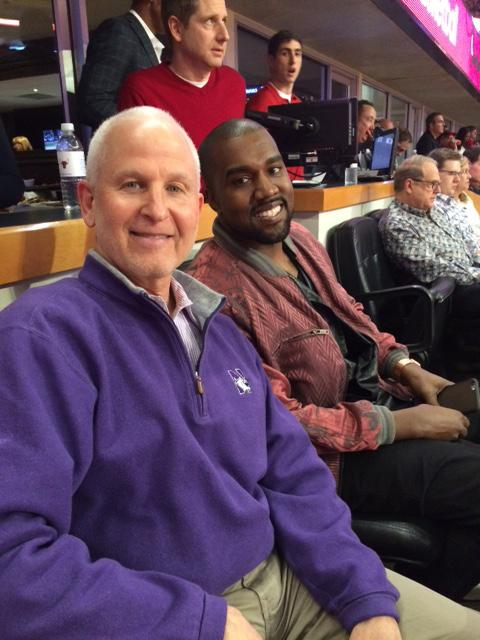
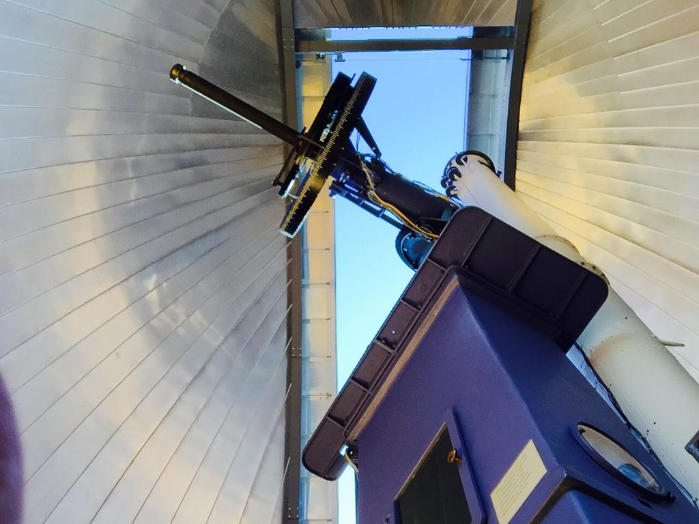

I just love tweeting about Northwestern so much! #GoCats #Purple
Help @KelloggSchool students celebrate #leadership week: What skills are necessary to be an effective leader? #KelloggLeads
Spotted at tonite's @chicagobulls game: @NorthwesternU President Morty Schapiro & North West dad @kanyewest! #B1GCats
Provost Dan Linzer and Executive VP Nim Chinniah now joining President Schapiro for a panel discussion. #NUConversations
Star gaze tonight @NUDearborn with a telescope older than the theory of general relativity
Four students and one alumnus from @BienenSchoolNU will perform today at 5:00pm CST @kencen in D.C. Watch it live: http://bit.ly/1yMoK3n